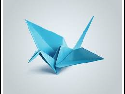
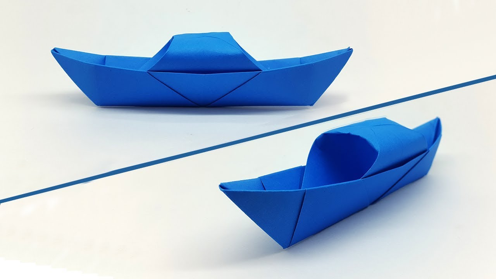

Origami Designs

Interesting Facts about birds:
- Bird have hollow bones
- Birds can make about 2000 voices
- Several birds like ostrich, chicken and penguins can't fly
Interesting Facts about frogs:
- Frogs can live both on land and in water
- Frogs have gills to breathe in water as well as lungs to breathe on land
- Frogs can make a leap of 2 feet that is almost 10 times its size

Interesting Facts about boats:
- Boats made of iron do not sink in water
- Earlier, wooden boats were made. These boats never decayed
- Boats nowadays are twice the size of Titanic which was the biggest in the 19th century